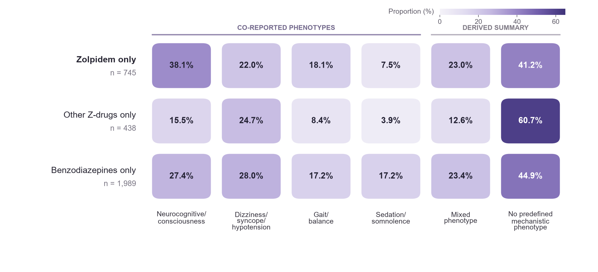

Fig. 4 Phenotype fingerprint of strict-fall reports across mutually exclusive sedative-hypnotic exposure groups. Heatmap cells show the proportion of strict-fall reports containing each prespecified co-reported phenotype. Percentages were calculated within zolpidem-only, other Z-drug-only, and benzodiazepine-only strict-fall reports. The basic phenotype domains were not mutually exclusive; therefore, percentages within a row do not sum to 100%. Mixed phenotype denotes at least two predefined phenotype domains, and no predefined mechanistic phenotype denotes none of the predefined domains. Darker shading indicates a higher within-group reporting proportion. The heatmap is descriptive; adjusted pairwise phenotype comparisons are reported in Supplementary Table S8.